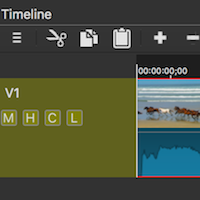
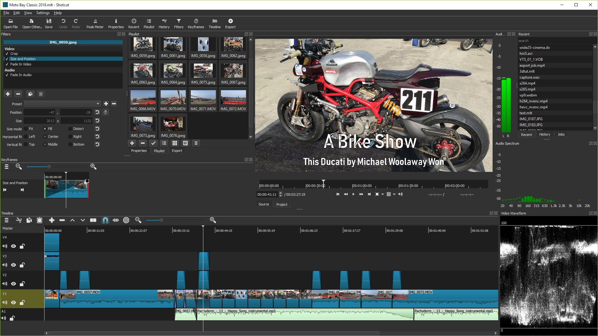

Shotcut 深度盘点：一个开源视频剪辑工具到底能扛多少活
从授权隐私、时间线标记、字幕体系到调色工具链，系统梳理 Shotcut 这款免费开源剪辑软件的完整能力边界与适用场景。
视频剪辑圈里有一类工具特别有意思——它们不靠订阅收费、不靠水印逼你升级、甚至连账号都不让你注册，但功能覆盖面却常常超出预期。Shotcut 就是这类工具里资历最老的之一，它的官网至今保持着纯粹的开源项目气质：从 2011 年第一个版本到现在，十年磨一剑地走开源路线，把 GPLv3 授权贯彻到底。今天我们把它的能力面完整铺开，看看这个"免费到底"的工具，实际能扛多少活。
开源免费这件事，它做到了什么程度
先把最关键的一件事说透：Shotcut 基于 GPLv3 发布，官方 FAQ 直接写了"可以为任何目的运行它，包括商业用途"。做自媒体接单剪片、公司内部用它出片子、甚至想二次开发改版——除了改版本身也要开源之外，没有任何限制。
具体到用户侧：没有水印、没有 Pro 版、没有会员体系、没有广告位、不需要联网激活。安装包从官方下载拿完就用，删了也不心疼。更难得的是它对隐私的态度——官方明确声明软件不收集、不存储、不分享任何个人信息，连使用行为统计都不上传。唯一例外是微软商店版本，那部分受微软自己的隐私声明约束，但绝大多数人直接从官网下载安装包，这条就完全不用操心。
这种"自由到底"的定位，让 Shotcut 在剪辑工具生态里占据了一个很独特的位置：它不是某个大厂产品线里的引流版，也不是靠功能锁逼你付费的 Freemium 模型，它的商业模式就是——免费，没有然后了。
时间线与标记系统：长项目导航的基础设施
剪辑一长，来回找切点就是灾难。Shotcut 在时间线导航这块下了不少功夫，标记（Markers）系统就是它多年迭代积累下来的实用功能。
标记点与范围标记是两个不同层级的能力。普通标记就是在时间线上插书签，双击可以改名、换颜色，配合键盘左右跳转标记位，长项目里的导航效率直接翻倍。而范围标记（Ranges）则更有意思——它不是一个点，而是一段区间，Shotcut文档列出的几个用途都很实用：按范围导出可以让一条工程直接产出多条短视频，不用重剪；范围标记能作为章节信息嵌进导出文件，播放器里可以按章节跳转；标记列表还能导出成文本，做拍摄脚本核对、分镜清单都能用上。

一个容易踩坑的点是「波纹标记」选项——26.9 版本修复了移动片段时标记被误删的问题，但开着波纹标记再删片段，标记会随波纹一起移动。配合好了是助力，没理解清楚就会觉得标记"自己会跑"。这个细节说明 Shotcut 的时间线逻辑比表面看的要深，真正用起来还是要花点时间熟悉它的行为模式。
字幕体系：独立面板与多格式支持
很多剪辑工具把字幕做成滤镜里的一个小功能，能用但不好用。Shotcut 的做法不同——它有一个独立的字幕面板，字幕按轨道管理，导入导出标准格式，而且面板本身带搜索框，长片里找某句词不用逐条翻。
支持的字幕格式覆盖了市面上最常见的几种：SRT、VTT、ASS、SSA。手里有现成的字幕文件（下载的、或者用语音转字幕功能生成的），导入后就是一条完整字幕轨，可以继续手动微调时间。想要硬字幕（烧录进画面）就用烧录滤镜，想要软字幕（播放器可选开关）就把 SRT 文件随视频一起发布——字幕轨本身在时间线上是独立层，导出时默认叠加显示，灵活度不低。

一个提高效率的小技巧：批量改字幕文本时，导出 SRT、用文本编辑器批量替换、再导回来，比在面板里逐条改快得多。这种"面板做精细调整 + 文本文件做批量操作"的组合，是 Shotcut 这类开源工具常见的工作思路——它不帮你做所有事，但给你足够的接口让你自己选高效路径。
调色工具链：从白平衡到三色轮的完整流程
Shotcut 的调色工具不算炫技，它没有那些花里胡哨的预设滤镜包，但把一条正规的调色流程完整覆盖了：白平衡 → 色阶/HSL → Color Grading 三色轮。
推荐的调色顺序是先打好地基：白平衡用吸管点一处"应该是白色"的地方，色偏一次性校正；然后拉色阶恢复对比度，用 HSL 按色相区间单独调饱和度；最后才上三色轮，对阴影、中间调、高光三个区域分别上色与调亮度——那种冷调阴影加暖调高光的影视感，就是靠这一步出来的。
调色时不要全靠肉眼，视频示波器（直方图、RGB 波形、矢量示波器）在查看菜单里打开，调完在正常光线下再看一遍准不准。另外调色吃性能，4K 工程里色轮加示波器同时开可能会卡，这属于 Shotcut 的典型短板——它在专业领域上是够格的，但在硬件加速和大文件处理上和 DaVinci Resolve 这类大厂工具还有差距。
短板也要说清楚
讲了这么多优点，不能回避几个现实问题。Shotcut 虽然功能全面，但它的开发团队规模很小，很多功能是社区贡献的，这意味着更新节奏快但质量参差——有时候一个版本修复了标记被误删的问题，下一个版本又可能引入新的不稳定因素。
硬件加速方面，Shotcut 近几年在追，但视频预览卡顿、导出速度慢这些问题在 4K 以上分辨率仍然常见。调色性能吃紧只是冰山一角，整个项目如果轨道多、滤镜密，预览帧掉得厉害是常事。
另外它没有云同步、没有协作功能——项目文件就是本地存的 .mlt 文件，要在多台电脑之间传靠 U 盘或者网盘，团队协作场景基本不存在。这对个人创作者来说不是问题，但对团队环境就是硬伤。
什么样的人该用 Shotcut
盘点下来，Shotcut 最匹配的是三类人：
第一类是个人创作者和独立视频博主。它的完整功能覆盖从剪辑到调色到字幕的全流程，免费且无水印，不需要考虑授权成本。配合一些辅助工具（语音转文字生成字幕、文本编辑器批量改字幕），完全能撑起一条稳定更新的视频输出线。
第二类是预算有限的学生和新手。入门阶段不想花订阅费、也不想忍受试用期的功能限制，Shotcut 是最干净的选择。它的界面逻辑虽然和行业标杆（Premiere Pro、DaVinci Resolve）有差异，但花一两周熟悉之后，基本操作效率并不低。
第三类是在意隐私和数据主权的用户。在这个各种软件都在收集行为数据、卖广告位的时代，一个明确告诉你"我不收集任何个人信息"的剪辑工具，本身就是稀缺品。尤其是做一些敏感内容的创作（比如独立纪录片、个人隐私相关项目），这点比功能多寡更重要。